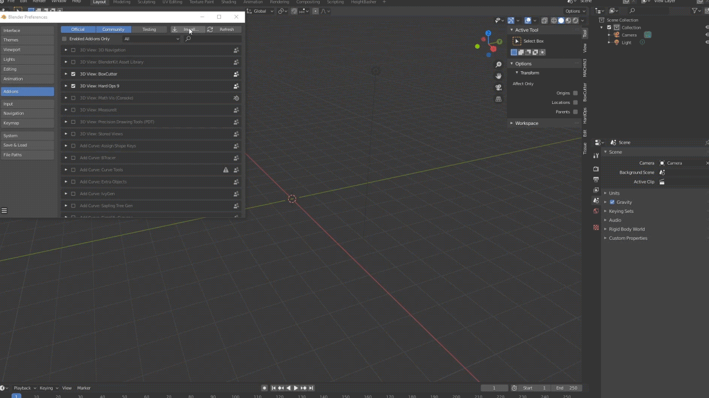

Installation
Requirements
Manual Installation
Download Heightbasher from or Gumroad
Windows
Copy the contents of the zip to the addons location:
example:
C:\Users\YOUR USER\AppData\Roaming\Blender Foundation\Blender\2.8X\scripts\addons
OSX
Copy the contents of the zip to the addons location:
example:
~/Library/Application Support/Blender/2.8X/scripts/addons
or from the finder menu
"Go" -> "Library"
and then navigate to Application Support/Blender/2.8X/scripts/addons
Linux
Copy the contents of the zip to the addons location:
~/.config/blender/2.8X/scripts/addons
Important: Never override the addon !!
If you choose to install a newer version of the package please make sure that you've already uninstalled the previous version by clicking on the "Remove" button inside the addon preference
Install from Blender
Open Blender -> open settings panel
navigate to "addons", click on "install" and select the zip file you've already downloaded

Important: Never override the addon !!
If you choose to install a newer version of the package please make sure that you've already uninstalled the previous version by clicking on the "Remove" button inside the addon preference
finally open Blender and enable Heightbasher